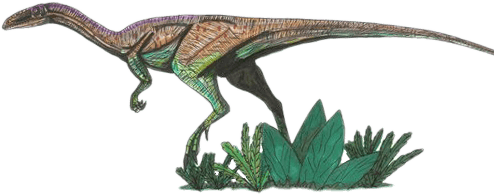

Segisaurus
Segi (canyon) Lizard
Diet: Carnivore
Segisaurus is an Early Jurassic meat-eater that seemed adapted for life in a dry, sandy environment. Though all early dinosaur predators had evolved to be quicker than the animals they replaced, scientists believe Segisaurus has features that made it extra fast.
The North American landscape where Segisaurus lived was very arid and sandy. This little dinosaur seemed to have features that would have made it well adapted to squatting down and sitting out a sandstorm. With only post-cranial remains, the exact look of this dinosaur is unknown.